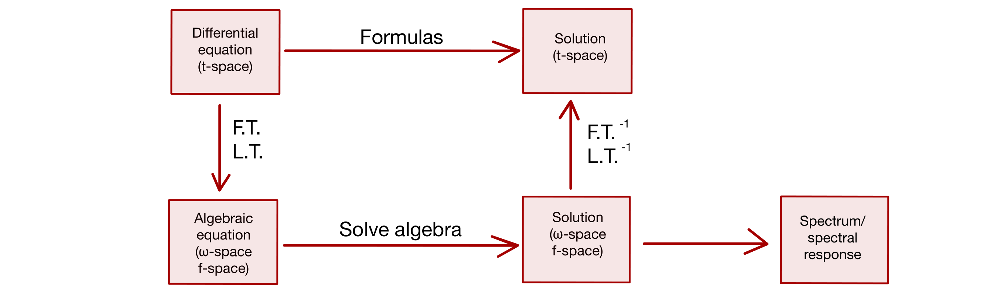
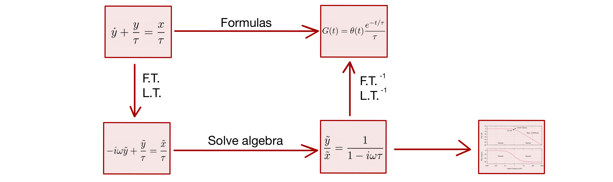

Lecture 03 - 20 September 2021¶
Equipped with the definitions and lemmas found in the last lecture it is possible to start talking about the z-transform. But first, it is necessary to draw some parallelisms with the solutions of a differential equation:

For example, with a low pas filter the procedure becomes:

In a similar way a difference equation can be solved via an approripate transform, the z-transform
The z-transform¶
Given a sequence \(x[n]\) we write the z-transform as
In the previous definition R.O.C stands for Region Of Convergence, the region of the complex plane where the series converges to a finite value.
Some remorkable exmplaes of z-tranforms are:
The delta¶
Step sequence¶
Step sequence (second case)¶
It is possible to notice that two different functions led to the same z-transform but to different R.O.C. A warning is due:
Warning
The z-transform is NOT sufficient to characterize a system in the z domain. The R.O.C. is part of the system too!
Properties of the z-transform¶
Let \(X[z] = Z(x[n])\)
Time shift¶
Linearity¶
Convolution¶
Cascade of two systems¶

If the two systems are L.T.I. the two cascade are equivalent: \(y[n]=y'[n]\). The proof lies in the equality of the z-transform and the properties of the convolution. More than that the two systems \(y[n]\) and \(y'[n]\) have the same R.O.C:
In the last properties the notion of inverse z-transform was suggest. To give a formal definion of inverse z-transform some lemmas are needed.
Lemmas for inverse z-transform¶
Close path integral¶
The close path integral around (um) a single pole \(z_0\) depends only on the order of the pole:
proof Take a circle of radius \(r\) around \(z_0\) such that \(z=z_0+re^{i\phi}\). Then:
Residual theorem¶
proof Let’s consider a function \(H(z)=G(z)(z-z_0)^n\) which has NO POLES (\(\implies\) it is analytic). By writing its Laurent series one obtains:
By computing the integral using the previous lemma:
Inversion of the z-transform¶
If \(X(z)=Z(x[n])\) then \(x[n]=\frac{1}{2\pi i} \oint_{\Gamma\text{ um }z_0} X(z) z^{n-1} dz\)
proof
where the second equality assumes the R.O.C. to be such that the inversion of the summation and the integral is possible.